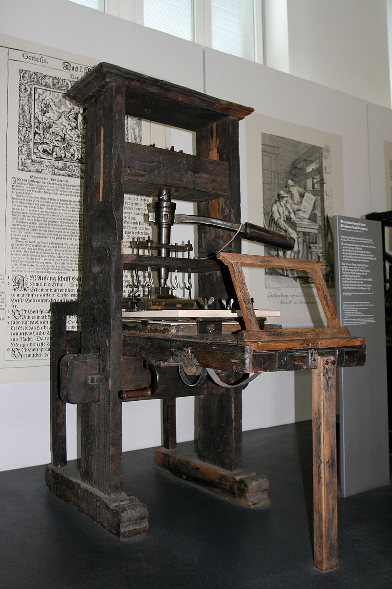
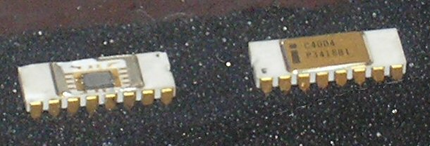

Technology ("science of craft", from Greek τέχνη, techne, "art, skill, cunning of
hand";
and -λογία, - logia ) is the collection of techniques , skills , methods, and processes used in the production of goods or services or in the accomplishment of
objectives, such as scientific investigation . Technology can be the knowledge of techniques, processes, and the like,
or it
can be embedded in machines to allow for operation
without
detailed knowledge of their workings. Systems (e. g.
machines) applying technology by taking an input
,
changing it according to the system's use, and then producing an outcome are referred to as technology
systems
or technological systems.
The simplest form of technology is the development and use of basic tools. The prehistoric discovery of how to control fire and the
later Neolithic Revolution increased the
available sources of food, and the invention of the wheel
helped humans to travel in and control their environment. Developments in historic times, including the printing press , the telephone , and the Internet , have lessened physical barriers to communication and allowed humans to interact
freely on a global scale.
Technology has many effects. It has helped develop more advanced economies (including today's global economy ) and has allowed the
rise
of a leisure class . Many technological
processes produce unwanted by-products known as
pollution
and deplete natural resources to the detriment of Earth's environment. Innovations have always
influenced the values of a society and raised
new
questions of the ethics of technology.
Examples include the rise of the notion of efficiency
in terms of human productivity , and the
challenges
of bioethics.
Philosophical debates have arisen over the use of technology, with disagreements over whether technology
improves the human condition or worsens it. Neo-Luddism , anarcho-primitivism , and similar reactionary movements criticize the pervasiveness
of
technology, arguing that it harms the environment and alienates people; proponents of ideologies such as transhumanism and techno-progressivism view continued
technological progress as beneficial to society and the
human condition
Definition and usage

The use of the term "technology" has changed significantly over the last 200 years. Before the 20th
century, the term was uncommon in English, and it was used either to refer to the description or study
of the useful arts[3] or to allude to technical
education, as in the
Massachusetts Institute of
Technology (chartered in 1861).[4]
The term "technology" rose to prominence in the 20th century in connection with the Second Industrial
Revolution . The term's meanings changed in the early 20th century when American social scientists,
beginning with Thorstein Veblen, translated
ideas from the German concept of Technik into
"technology."
In German and other European languages, a distinction exists between technik and technologie that is
absent in English, which usually translates both terms as "technology." By the 1930s, "technology"
referred not only to the study of the industrial arts but to the industrial arts themselves.
In 1937, the American sociologist Read Bain wrote that "technology includes all tools, machines,
utensils, weapons, instruments, housing, clothing, communicating and transporting devices and the skills
by which we produce and use them."[6] Bain's definition remains common among scholars today, especially
social scientists. Scientists and engineers usually prefer to define technology as applied science,
rather than as the things that people make and use.[7] More recently, scholars have borrowed from
European philosophers of "technique" to extend the meaning of technology to various forms of
instrumental reason, as in Foucault's work on
technologies of the self (techniques de soi).
Dictionaries and scholars have offered a variety of definitions. The
Merriam-Webster Learner's
Dictionary offers a definition of the term: "the use of science in industry, engineering, etc., to
invent useful things or to solve problems" and "a machine, piece of equipment, method, etc., that is
created by technology."[8] Ursula Franklin ,
in her 1989 "Real World of Technology" lecture, gave another
definition of the concept; it is "practice, the way we do things around here."[9] The term is often used
to imply a specific field of technology, or to refer to
high technology or just consumer
electronics,
rather than technology as a whole.[10] Bernard
Stiegler, in Technics and Time, 1,
defines technology in
two ways: as "the pursuit of life by means other than life," and as "organized inorganic matter."
Technology can be most broadly defined as the entities, both material and immaterial, created by the
application of mental and physical effort in order to achieve some value. In this usage, technology
refers to tools and machines that may be used to solve real-world problems. It is a far-reaching term
that may include simple tools, such as a crowbar or wooden spoon, or more complex machines, such as a
space station or particle accelerator. Tools and machines
need not be material; virtual technology, such
as computer software and business methods, fall under this definition
of technology. W. Brian Arthur
defines technology in a similarly broad way as "a means to fulfill a human purpose."
The word "technology" can also be used to refer to a collection of techniques. In this context, it is
the current state of humanity's knowledge of how to combine resources to produce desired products, to
solve problems, fulfill needs, or satisfy wants; it includes technical methods, skills, processes,
techniques, tools and raw materials. When combined with another term, such as "medical technology" or
"space technology," it refers to the state of the respective field's knowledge and tools.
" State-of-the-art technology" refers to the
high technology available to humanity in any field.

Technology can be viewed as an activity that forms or changes culture.[14] Additionally, technology is the
application of math, science, and the arts for the benefit of life as it is known. A modern example is the
rise of communication technology, which has lessened barriers to human interaction and as a result has
helped spawn new subcultures; the rise of cyberculture has at its basis the development of the Internet and
the computer.[15] Not all technology enhances culture in a creative way; technology can also help facilitate
political oppression and war via tools such as guns. As a cultural activity, technology predates both
science and engineering, each of which formalize some aspects of technological endeavor.
Read more

 s
s